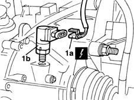

2180A36 milometer control sensor on gearbox - r + r
- Path
- Procedures > 21 GEARBOX > 2180 SPEED SIGNAL CONTROLS' > 2180A milometer control > 2180A36 milometer control sensor on gearbox - r + r
- Kind
- repair procedure (removal / refitting; the operation number is the code)
- Applies to
- all engines; all production periods
- Interactive page
- https://sloeber94.github.io/elrnDB-fMltpl/en/#/2891555
Applies to: all engines; all production periods
 Removing
Removing
 Refitting
RefittingPlace the car on a ramp.
Disconnect the battery's negative terminal.
Raise the car.
1. Disconnect the electrical connection (1a), then undo and remove the speedometer sensor (1b).
 | Name | Connector |
|---|---|---|
1a | Speedometer sensor |

Applies to: all engines; all production periods
Refitting
RemovingFit the speedometer sensor on the gearbox.
Connect the sensor's electrical connection.
Lower the vehicle.
Connect the battery's negative terminal.
Remove the vehicle from the ramp.